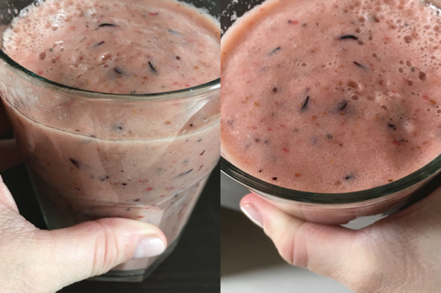
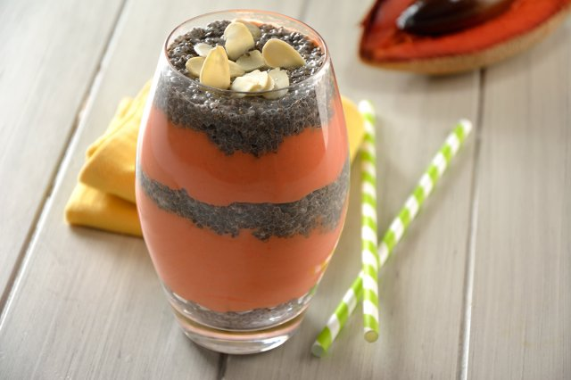

-
JUGO DE PAPAYA, TORONJA Y NOPAL
Cuídate y quema grasa con esta combinación de frutas de forma fácil y rápida. El jugo de papaya, toronja y nopal es delicioso, bien fácil de preparar y muy saludable. ¡No dejes de prepararlo!..
Leer Mas -
LICUADO DE LECHE DE SOYA Y AVENA
Esta receta es deliciosa y sirve para bajar de peso, te llena de nutrientes y energía...
Leer Mas -
SMOOTHIE DE MANZANA Y YOGHURT
Prepara este delicioso smoothie de manzana, yoghurt, frutilla y chía. Una combinación deliciosa que te dará toda la energía para poder empezar tu día. Es sencillo y rápido de hacer; no esperes más.
Leer Mas -
SMOOTHIE DE TÉ VERDE CON PLÁTANO
Este batido llenará tu día de energía, además de nutritivo es muy refrescante y depurativo por su alto contenido de fibra la cual contribuye a una buena digestión y a mantenerte satisfecho.
Leer Mas -
SMOOTHIE DE MELÓN CON LIMÓN AMARILLO Y SANDÍA
Prepara este fresco smoothie de melón con limón amarillo, sandía y un toque de jengibre endulzado con miel y con un poco de chía para hacerlo más nutritivo. Una buena opción de snack a media mañana o buena fuente de energía para empezar tus mañanas.
Leer Mas -
JUGO PARA FORTALECER DEFENSAS
Jugo para fortalecer defensas, y hacer que nuestro organísmo esté más sano y fuerte, es rico en vitamina C y alto en fibra, perfecto para empezar el día y llenarte de energía. Empieza tus mañanas de esta manera y cambia tus habitos.
Leer Mas -
SMOOTHIE DE MAMEY CON CHÍA
Prepara este saludable y rico smoothie de mamey con chía. Es perfecto para empezar las mañanas e ideal para días calurosos. Puedes preparar el pudin de chía un día antes y servirlo al día siguiente con el smoothie de mamey. La leche de almendra le da un sabor especial y el Yoghurt aporta un sabor delicioso.
Leer Mas -
LICUADO DE MANZANA LIGHT
Licuado de Manzana saludable,fácil y sencillo! Para acompañarlo en un desayuno sano.
Leer Mas -
LICUADO DE PLÁTANO CON AMARANTO
LDesayuno rápido y nutritivo, prueba este delicioso licuado de plátano con amaranto. Con esta receta tendrás la seguridad de que tus hijos tendrán la energía necesaria para comenzar su día.
Leer Mas -
JUGO DE MANZANA
Delicioso jugo de manzana, este jugo lleva jengibre y canela para resaltar el sabor de la manzana. Queda buenísimo.
Leer Mas